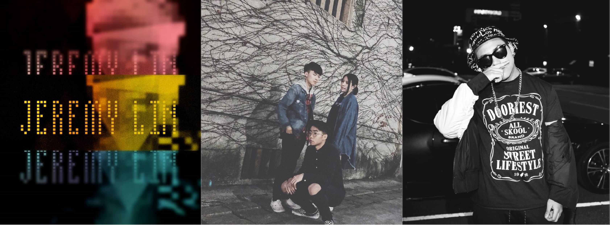

高中音樂人專訪
──每個夢都需要一個起點，校園是他們展翅高飛的開端
很多人說：「夢想是不可能達成的東西。」即便如此，卻有群喜愛音樂的高中生們，正以他們自己的力量，試圖去扭轉這些「不可能」。

▎ 才華洋溢的逐夢少年：林哲惟
「當初會想嘗試寫歌其實是個偶然。」眼前這位皮膚黝黑、身材高瘦的少年眼神炯亮地說著。
他是林哲惟，目前就讀松山高中二年級，是淞霧攝影社社長，同時也是一名音樂創作人。他以「Jeremy Lin」為名持續在線上音樂平臺「SoundCloud」發表作品，迄今已發表超過三十首的原創曲，獨特的曲風也為他累積了不少人氣...
▎ 魅力十足的高中歌手：許永霖
「我是Young Lin，17歲，我要緊握的是我做音樂的夢想。」許永霖，松山嘻哈文化研究社創社社長，，在校內或許已有不少人聽過他的名字。這位兼有不同身分的高二生，於去年年底踏上了創作之路，之後更開始嘗試推出原創音樂作品。目前他已在網路上發表了兩首個人單曲，值得一提的是，兩首歌曲皆被網路神秘饒舌評論粉專「stu sis」給予了相當正面的評價，引起了不少討論。在此次採訪中...
▎ 實力堅強的新興樂團：縮影樂團
甫於今年二月成立的「縮影樂團」，可說是個備受學生們矚目的獨立樂團。而在因緣際會之下，我們順利訪問到了該團的成員，才得以揭開這個三人高中生樂團的神秘面紗。
主唱蔡杰恩是內湖高中吉他社現任教學長，除了有彈奏吉他的專長外，也同時擁有令人驚艷的歌唱實力。當初之所以會想組團，是因為自己一直以來都很渴望追求到更深層的音樂，算是一份他目前相當重視的理想...
此為部分內容，更多關於校內獨立音樂人的介紹就在松山青年29期校刊《浮生抗世》